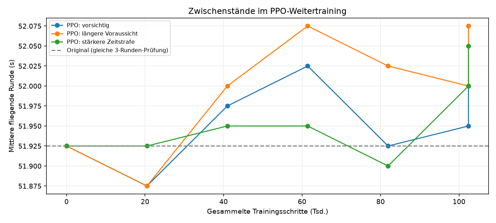

KART-RL / FAHRER-OPTIMIERUNG
Schneller und geprüft
0.047 s pro Runde
Differenz der mittleren fliegenden Runden im abschliessenden
30-Runden-Vergleich. Identische Strecke, Kartphysik, Sensoren und Kart-Kontur-Kollisionsregel. Keine Boxenstopps.
| Modell | Ø fliegend (s) | Beste fliegend (s) | Neue Zufallsstarts |
|---|
| Jerys Original | 51.897 | 51.800 | 9/10 |
| Optimierte Policy | 51.850 | 51.700 | 9/10 |
Was wurde optimiert?
Drei PPO-Varianten erhielten je 102'400 zusätzliche Schritte: vorsichtige Lernrate,
längere Voraussicht und eine stärkere Zeitstrafe. Die schnellsten sicheren Zwischenstände wurden gespeichert.
Daneben wurde die Ausgabeschicht der Policy mit einer kleinen Parametersuche feinabgestimmt; diese Kalibrierung ist kein zusätzliches PPO-Training.
Der endgültige Kandidat kombiniert längere Voraussicht mit einer Lenkausgabe-Verstärkung von 0.94 und einem Gas-/Bremsbias von −0.01.
Die Umwelt begrenzt alle Aktionen weiterhin auf die normalen Werte. Leistung, Grip, Bande und Strecke wurden nicht erleichtert.
Erkundete Kandidaten: jeweils zehn Runden
Original in dieser kürzeren Prüfung: 51.894 s im Mittel.
Diese Tabelle diente der Auswahl. Die abschliessende längere Prüfung oben verwendet ein anderes Rundenbudget.
| Kandidat | Runden | Ø fliegend (s) | Beste fliegend (s) |
|---|
| PPO: vorsichtig | 10/10 | 51.894 | 51.800 |
| PPO: längere Voraussicht | 10/10 | 51.850 | 51.700 |
| PPO: stärkere Zeitstrafe | 10/10 | 51.906 | 51.750 |
| Lenkung: Grobsuche | 10/10 | 51.844 | 51.750 |
| Lenkung: Feinsuche | 10/10 | 51.833 | 51.750 |
| Gas-/Bremsverstärkung | 10/10 | 52.050 | 51.850 |
| PPO + Policy-Feinabstimmung | 10/10 | 51.806 | 51.700 |
Warum den besten Zwischenstand behalten?

Die Kurven verwenden kurze Prüfungen mit drei Runden. Mehr Training verbessert nicht jeden späteren Stand.
Die letzte Aktualisierung wird separat geprüft; sie muss nicht das schnellste Modell liefern.
Zusätzliche Startzustände
Beide Modelle fahren dieselben zehn neuen Zufallsstarts (Seeds 100–109), jeweils bis zu zwei Ziellinienüberquerungen.
Die optimierte Version wird nur übernommen, wenn sie den langen Lauf beendet, schneller ist und mindestens so viele Zufallsstarts beendet wie das Original.
| Seed | Original | Kandidat |
|---|
| 100 | laps | laps |
| 101 | laps | laps |
| 102 | laps | laps |
| 103 | laps | laps |
| 104 | laps | laps |
| 105 | laps | laps |
| 106 | laps | laps |
| 107 | laps | laps |
| 108 | off_track | off_track |
| 109 | laps | laps |
Ergebnis gilt für diese deterministische Strecke und die geprüften Starts. Kein Nachweis allgemeiner Überlegenheit auf anderen Strecken.
Das Original bleibt unverändert; die geprüfte Kopie liegt im Unterordner winner/.
Alle Vergleiche als JSON · Lange Prüfung